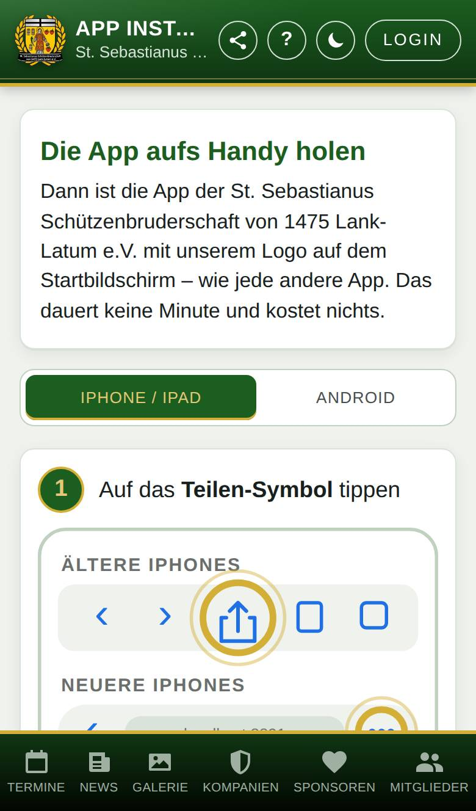
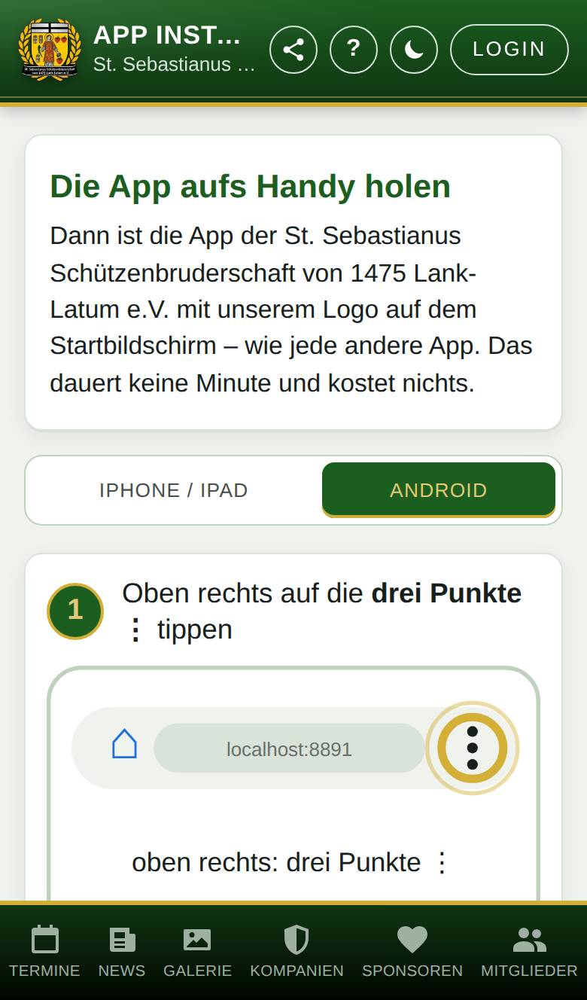

Die App aufs Handy holen
Die App der St. Sebastianus Schützenbruderschaft von 1475 Lank-Latum e.V. läuft im Browser und lässt sich wie jede andere App auf den Startbildschirm legen – ohne App-Store und kostenlos. Diese Seite zeigt dir Schritt für Schritt, wie das auf deinem Handy geht.

So öffnest du die Seite
- Tippe im Hinweis Die App aufs Handy holen oben auf So geht's.
- Mit Konto: Tippe unten auf Meins, wähle oben im Menü Konto und tippe auf App installieren.
Was du hier siehst
- App installieren (oben): erscheint nur, wenn dein Browser die Installation direkt anbietet (z. B. Chrome auf Android). Ein Tipp genügt.
- iPhone / iPad und Android: wählen die passende Anleitung. Die App wählt dein Gerät schon vor.
- Schritte mit Bildern: Die Bilder zeigen, wohin du tippst; die Stelle ist farbig umkreist.
- Anleitung weitergeben (unten): ein Link, der genau diese Anleitung öffnet, mit dem Knopf Link teilen.
So gehst du vor
Auf dem iPhone oder iPad
- Öffne die Adresse der App in Safari.
- Tippe auf das Teilen-Symbol (Quadrat mit Pfeil nach oben). Am iPhone steht es meist in der Leiste unten, am iPad in der Leiste oben. Ab iOS 26 ist in Safari die Darstellung Kompakt voreingestellt: Dann tippe zuerst auf ••• an der Adresszeile und dann auf Teilen. Umstellen lässt sich das unter Einstellungen → Apps → Safari → Tabs (Kompakt, Unten oder Oben).
- Wähle Zum Home-Bildschirm. Der Eintrag steht weiter unten in der Liste; wische nach oben, bis er erscheint.
- Tippe oben rechts auf Hinzufügen. Steht dort der Schalter „Als Web-App öffnen“, lass ihn eingeschaltet.
- Starte die App ab jetzt immer über das neue Symbol mit dem Logo. Die Anmeldung bleibt gespeichert.
Auf einem Android-Handy
- Öffne die Adresse der App in Chrome. Warum Chrome: Nur Chrome legt auf Android eine richtige App an, die in der Liste deiner Apps steht und Benachrichtigungen zeigt. Andere Browser legen nur eine Verknüpfung an (siehe unten).
- Steht oben der Knopf App installieren, tippe darauf und bestätige. Fertig.
- Sonst zeigt die Anleitung unter Android die Schritte mit Bildern: Tippe in Chrome oben rechts auf die drei Punkte ⋮ und wähle App installieren (je nach Handy heißt der Eintrag auch „Zum Startbildschirm hinzufügen“).
- Bestätige mit Installieren bzw. Hinzufügen. Fragt Chrome „Installieren“ oder „Verknüpfung erstellen“, wähle Installieren.
Andere Browser auf Android
Öffnest du die Anleitung in einem anderen Browser, zeigt die App oben einen Hinweis mit dem Grund und den Knöpfen In Chrome öffnen, Chrome herunterladen und Adresse kopieren. Ist Chrome noch nicht auf dem Handy, lade es zuerst über Chrome herunterladen kostenlos aus dem Play Store und tippe danach wieder auf In Chrome öffnen. Ob Chrome schon installiert ist, kann die Seite selbst nicht erkennen, deshalb stehen beide Knöpfe immer da.
- Samsung-Browser (Samsung Internet): Bitte nicht dort installieren. Ab Android 14 blockiert Google Play Protect die App, die der Samsung-Browser anlegt, als unsicher bzw. „für eine ältere Android-Version entwickelt“. Das ist ein Fehler des Samsung-Browsers, seit April 2026 gemeldet und noch nicht behoben. Mit Chrome klappt es auch auf Samsung-Handys.
- Edge, Firefox, Opera, Brave und andere: Sie legen nur eine Verknüpfung an, keine richtige App: Sie steht nicht in der Liste deiner Apps und öffnet sich über den Browser. Benachrichtigungen gehen in Firefox und Opera grundsätzlich auch; bei den anderen ist es nicht sicher. Wer trotzdem dort bleiben möchte: in Firefox ⋮ → Installieren → Automatisch hinzufügen, in Opera Menü → Hinzufügen zu … → Startbildschirm, sonst im Menü des Browsers Zum Startbildschirm hinzufügen (oder ähnlich).
- Eingebaute Browser anderer Apps (z. B. wenn du einen Link in WhatsApp, Facebook oder Instagram antippst): Sie können keine Apps installieren und keine Benachrichtigungen zeigen. Kopiere die Adresse und öffne sie in Chrome.
Klappt es nicht?
- Kein Eintrag zum Installieren: Ist die App schon installiert, bietet Chrome sie nicht noch einmal an. Sieh in der Liste deiner Apps nach.
- Xiaomi, Redmi, POCO: Dort darf ein Browser erst Symbole auf den Startbildschirm legen, wenn du es erlaubst. Schalte in den Einstellungen des Handys bei den Berechtigungen von Chrome die Verknüpfungen auf dem Startbildschirm ein.
- Huawei ohne Google-Dienste: Dort gibt es keinen Play Store, Chrome herunterladen führt dann ins Leere. Ist Chrome trotzdem installiert, legt es nur eine Verknüpfung an, und Benachrichtigungen können ausbleiben, weil sie über Google zugestellt werden.
- Benachrichtigungen kommen nicht an: Manche Handys (z. B. Samsung, Xiaomi, Huawei) beenden Apps im Hintergrund, um Akku zu sparen. Nimm Chrome und die App in den Akku-Einstellungen von der Optimierung aus.
- Android 8 oder 9: Chrome bekommt dort keine neuen Versionen mehr (die letzte ist Chrome 138); die App kann eingeschränkt laufen.

Die Anleitung an andere schicken
- Tippe unten auf der Seite auf Link teilen.
- Wähle z. B. WhatsApp oder E-Mail. Am Computer kopiert die App den Link.
Gut zu wissen
- Ab iOS 16.4 können auch andere Browser auf dem iPhone (z. B. Chrome, Edge, Firefox) Zum Home-Bildschirm im Teilen-Menü anbieten; ob der Eintrag da ist, hängt vom Browser ab. Die App zeigt in diesen Browsern einen Hinweis; fehlt der Eintrag, kopiere die Adresse und öffne sie in Safari.
- Ist die Adresse im eingebauten Browser einer anderen App geöffnet (WhatsApp, Facebook, Instagram o. Ä.), klappt die Installation nicht. Die App zeigt dann Adresse kopieren; öffne die Adresse in Safari bzw. Chrome.
- Bekommt die App ein neues Logo, übernimmt Chrome auf Android das neue Symbol nach einiger Zeit von selbst; bei einer größeren Änderung fragt Chrome vorher nach. Auf dem iPhone bleibt das Symbol, das beim Hinzufügen gespeichert wurde.
- Benutzt du die App schon installiert, steht hier „Alles erledigt“.
- Was du zuletzt geladen hast, bleibt auch ohne Internet sichtbar. Oben steht dann „Offline – angezeigt werden die zuletzt geladenen Daten.“
- Auf dem iPhone und iPad gibt es Benachrichtigungen nur in der installierten App, siehe Benachrichtigungen.
Siehe auch
Für Fortgeschrittene: Quellen zu den Angaben über die Browser (Stand November 2026): web.dev „Installation“ (welche Browser echte Apps anlegen), Fehlerbericht samsunginternet/support#123 (Play Protect), Hilfeseiten von Mozilla, Opera und Chrome (Menüs, Benachrichtigungen), Chromium-Ankündigung zum Ende von Android 8 und 9.